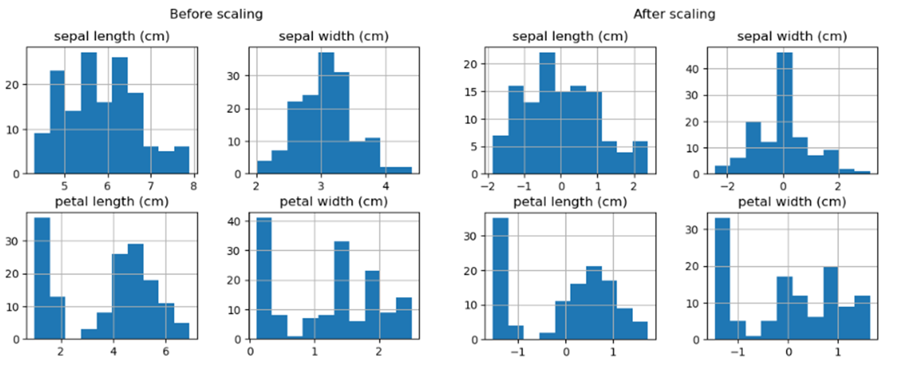
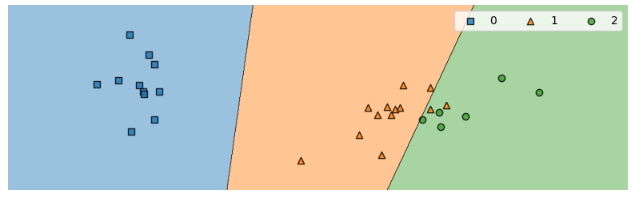
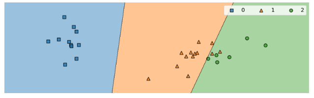

Now you will extend the code you started in the previous lesson to build a support vector machine classification model using a linear kernel.
Let’s start with a linear kernel with the default parameters. The Sklearn documentation for SVM can be helpful to understand this process.
from sklearn.preprocessing import StandardScaler
import seaborn as sns
from sklearn.model_selection import train_test_split
# Import data and modules
import pandas as pd
import numpy as np
from sklearn import datasets
iris = datasets.load_iris()
# We'll use the petal length and width only for this analysis
X = iris.data
y = iris.target
# Place the iris data into a pandas dataframe
iris_df = pd.DataFrame(iris.data, columns=iris.feature_names)
X_train, X_test, y_train, y_test = train_test_split(X, y, test_size=.2, random_state=0)
sc = StandardScaler()
sc.fit(X_train)
X_train_std = sc.transform(X_train)
X_test_std = sc.transform(X_test)
plt.figure()
iris_df.hist()
plt.suptitle("Before scaling")
pd.DataFrame(X_train_std, columns=iris_df.columns).hist()
plt.suptitle("After scaling")
plt.show()Output:

The idea behind OvR (SVM one vs rest) is to train one binary classifier for each class, where the positive examples are from that class and the negative examples are from all other classes combined.
from mlxtend.plotting import plot_decision_regions
from sklearn.decomposition import PCA
pca=PCA(n_components=2)
reduced_data_train=pca.fit_transform(X_train_std)
reduced_data_test=pca.transform(X_test_std)
classifier=SVC(kernel='linear', random_state=0, gamma=.10, C=1.0).fit(reduced_data_train,y_train)
plt.figure(figsize=(10,3))
classifier=SVC(kernel="linear", random_state=0, gamma=.10, C=1.0,decision_function_shape='ovr').fit(reduced_data_train,y_train)
# Plot decision boundary
plot_decision_regions(reduced_data_test, y_test, clf=classifier, legend=2)
plt.title(kernel)
plt.legend(ncol=3)
plt.axis("off")
plt.show()Output:

from mlxtend.plotting import plot_decision_regions
plt.figure(figsize=(10,3))
classifier=SVC(kernel="linear", random_state=0, gamma=.10, C=1.0,decision_function_shape='ovo').fit(reduced_data_train,y_train)
# Plot decision boundary
plot_decision_regions(reduced_data_test, y_test, clf=classifier, legend=2)
plt.title(kernel)
plt.legend(ncol=3)
plt.axis("off")
plt.show()Output:
